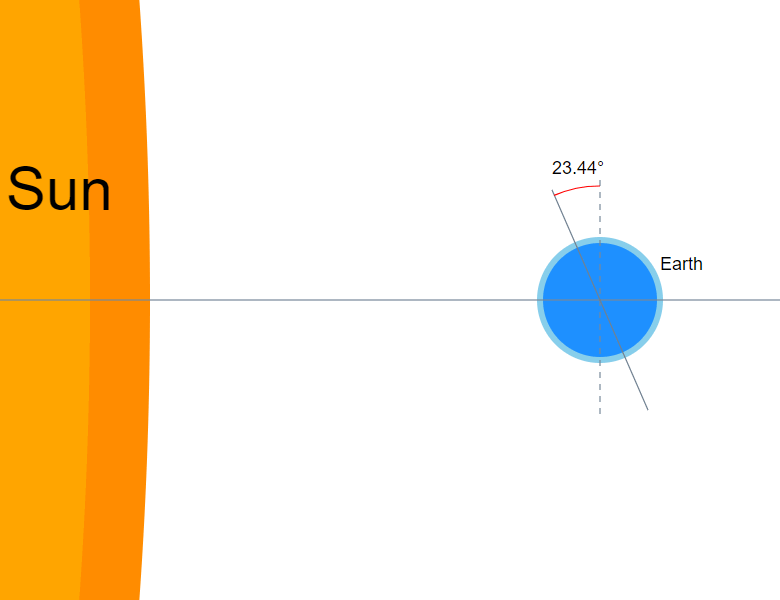
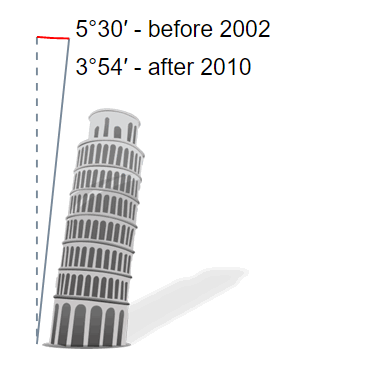

Interesting angles
Earth’s axial tilt
Our planet’s angle of tilt is about 23.44 degrees, relative to Earth's orbit around the sun.
Tower of Pisa
Before the restoration the tower was tilted at an angle of 5.5 degrees. After the restoration it leans at about 3.5 degrees.
